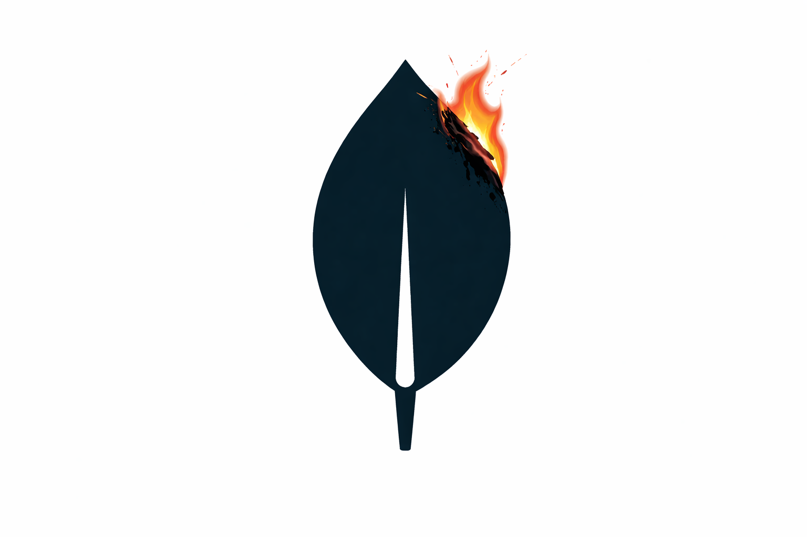
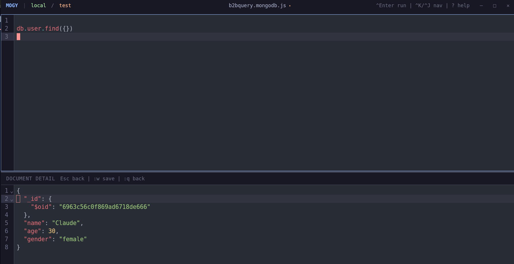

A keyboard-driven MongoDB query UI with first-class Vim support
Tauri v2 · React 19 · CodeMirror 6 · Catppuccin Mocha

Full vim mode via CodeMirror. jk to exit insert, :w to save, :wqa to save and quit the app.
Navigate everything with j/k, h/l, g/G, and a leader key (Ctrl+Space).
Collection names and query methods (.find, .aggregate, .updateMany, ...) suggested as you type.
Quick fuzzy access to all actions via Ctrl+Space p. Connections, databases, files, layout — all in one place.
Run .find(), .aggregate(), .updateMany(), .count(), .distinct(), and more with Ctrl+Enter.
Remembers your last connection, database, collection, editor content, and layout direction across restarts.
Save and switch between multiple MongoDB connections. Databases and collections are listed for quick selection.
Save queries as .mongodb.js files. Load, create, and switch between them. Content persists per file.
All keybindings are overridable via ~/.config/mogy/settings.json
Create ~/.config/mogy/settings.json to override defaults. Only specify keys you want to change.
{
"keybindings": {
"runQuery": "ctrl+Enter",
"focusEditor": "ctrl+k",
"focusResults": "ctrl+j",
"leader": "ctrl+space",
"leader.commandPalette": "p",
"leader.connections": "a",
"leader.databases": "d"
}
}React 19 + TypeScript + Vite
Rust + Tauri v2
CodeMirror 6 + @replit/codemirror-vim
MongoDB Rust Driver
Tailwind CSS + Catppuccin Mocha